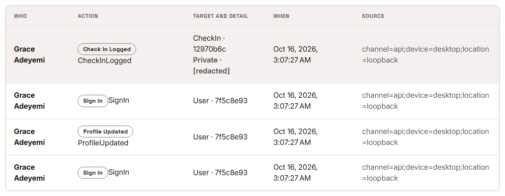

Waypoint · Video 079
Recording audit events
Important actions leave a trace automatically
Grace in the audit log

Written automatically
Who, what, to what, when, from where
Who did it
What the action was and what it was done to
When it happened
The source: device and place, when captured
Protected from change
Append only: no screen edits or deletes entries
Entries are chained so tampering can be detected
A failed check shows a red warning
Only program administrators can read the log
Things to remember
Important actions write an entry automatically
Who, what, to what, when and from where
Private note content is redacted
Append only, readable by program administrators only